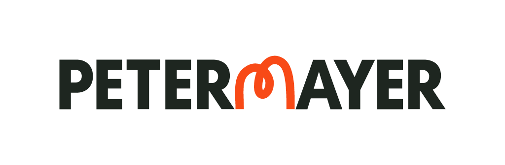
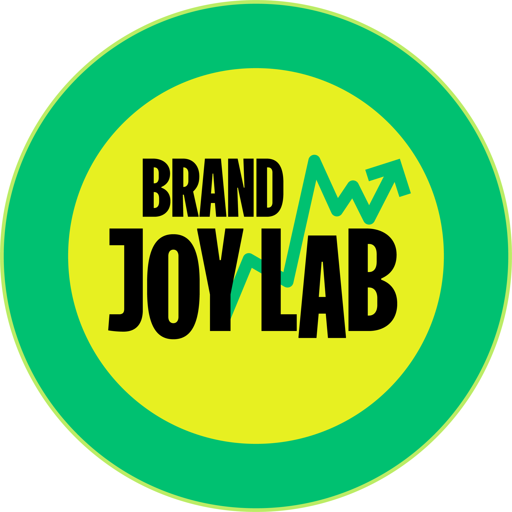

<!doctype html>
<html lang="en">
<head>
  <meta charset="utf-8" />
  <meta name="viewport" content="width=device-width, initial-scale=1" />
  <title>Brand Joy Lab · Intelligence Engine</title>
  <link rel="stylesheet" href="styles_v2.css?v=5" />
</head>
<body data-display="on">
  <div id="root"></div>

  <script crossorigin src="https://unpkg.com/react@18.3.1/umd/react.production.min.js"></script>
  <script crossorigin src="https://unpkg.com/react-dom@18.3.1/umd/react-dom.production.min.js"></script>
  <script src="https://unpkg.com/@babel/standalone@7.29.0/babel.min.js"></script>
  <script src="https://cdnjs.cloudflare.com/ajax/libs/xlsx/0.18.5/xlsx.full.min.js"></script>

  <script type="text/babel" data-presets="env,react">
/* =========================================================================
 * Brand Joy Lab — Intelligence Engine (v2 frontend)
 *
 * Parallel build alongside index.html. Backend contracts preserved:
 *   - /api/bjl-query (SSE orchestrator) — adds optional evidence event
 *   - /api/claude (Anthropic passthrough) — unchanged
 *
 * The deployed email system prompt (buildEmailSystem) is ported verbatim.
 * ========================================================================= */
const { useState, useEffect, useRef, useCallback, useMemo } = React;

/* =========================================================================
 * 1. PORTED UTILITIES — from the live deployed index.html, verbatim.
 * ========================================================================= */

const sanitizeEmail = (text) => {
  return text
    // Strip https:// or http:// when followed by www. — the www-prefixed URL renders
    // as a clickable link in every email client and we avoid the model's habit of
    // autocapitalizing the protocol after a sentence-ending period.
    .replace(/\b[Hh]ttps?:\/\/(?=www\.)/g, '')
    // For the rare URL with https:// but no www. prefix, lowercase the protocol.
    .replace(/\bHttps:\/\//g, 'https://')
    .replace(/\bHttp:\/\//g, 'http://')
    .replace(/Won'tBow/g, "Won't Bow")
    .replace(/Won’tBow/g, "Won’t Bow")
    .replace(/^\*{1,2}\n/, '')
    .replace(/^\*{1,2}\s*/, '')
    .replace(/^(Subject:)\*{1,2}\s*/, '$1')
    .replace(/ — /g, '. ')
    .replace(/—/g, '. ')
    .replace(/ – /g, '. ')
    .replace(/\.\s*,/g, '.')
    .replace(/\.\./g, '.')
    .replace(/ \. /g, '. ')
    .replace(/\. ([a-z])/g, (m, c) => '. ' + c.toUpperCase())
    .replace(/\.\s*,/g, '.')
    .replace(/\.\./g, '.')
    .replace(/\bJI=\d+\.?\d*/g, '')
    .replace(/a Joy Index of \d+\.?\d*/gi, 'a high joy score')
    .replace(/Joy Index of \d+\.?\d*/gi, 'high on the joy scale')
    .replace(/scores a \d+\.?\d* (on|for|in)/gi, 'scores highly $1')
    .replace(/\d+\.?\d* (on the [Jj]oy|on our [Jj]oy)/g, 'highly $1')
    .replace(/The high on the joy scale/gi, 'This high joy score')
    .replace(/\n(Ryan|Eli|Shannon|Dana|Chris|Tameka|Deandra|Mauricio|Pete|Stella|Nicole|Christina|Terri|Dustin|Drew|Jen|Carol|Amy|Tim|Luis|Stephen|Jim|Nate|Hiroshi|Jessica|Dan)\s*$/, '\n[Your name]');
};

const stripMarkers = (text) => text.replace(/[\[\(]\s*(?:BJL|CRED)\s*[\]\)]\s*\n?/gi, '');
const CRED_MARKER_RE = /[\[\(]\s*CRED\s*[\]\)]/i;

const validateCredentials = async (emailText, strategistCtx) => {
  if (!strategistCtx || !strategistCtx.trim()) return stripMarkers(emailText);
  if (!CRED_MARKER_RE.test(emailText)) {
    return stripMarkers(emailText);
  }
  try {
    const ctrl = new AbortController();
    const timer = setTimeout(() => ctrl.abort(), 6000);
    const credMatch = emailText.match(/[\[\(]\s*CRED\s*[\]\)]\s*\n?([\s\S]*?)(?=\n\n[A-Z]|\nWould|\nWorth|\nBest|\nThanks|\[Your name\]|$)/i);
    if (!credMatch) return stripMarkers(emailText);
    const credParagraph = credMatch[1].trim();
    const prompt = 'APPROVED SOURCE MATERIAL — the only text you may draw from:\n---\n' + strategistCtx + '\n---\n\nAGENCY CREDENTIAL PARAGRAPH TO REWRITE:\n---\n' + credParagraph + '\n---\n\nTask: Rewrite this paragraph so every specific claim, client name, and credential comes directly from the APPROVED SOURCE MATERIAL above. You may paraphrase but must not add, invent, or imply anything not in the source material. Keep it to two sentences maximum — this is an intro email. Return only the rewritten paragraph — no markers, no commentary, no subject line.';
    const res = await fetch('/api/claude', {
      method: 'POST',
      headers: { 'Content-Type': 'application/json' },
      signal: ctrl.signal,
      body: JSON.stringify({
        model: 'claude-haiku-4-5-20251001',
        max_tokens: 600,
        system: 'You rewrite agency credential paragraphs to use only approved source material. Return only the rewritten paragraph.',
        messages: [{ role: 'user', content: prompt }]
      })
    });
    clearTimeout(timer);
    const cleanEmail = stripMarkers(emailText);
    if (!res.ok) return cleanEmail;
    const data = await res.json();
    const rewrittenCred = (data.content?.map(b => b.type === 'text' ? b.text : '').filter(Boolean).join('\n') || '').trim();
    if (!rewrittenCred) return cleanEmail;
    return cleanEmail.replace(credParagraph, rewrittenCred);
  } catch(e) {
    return stripMarkers(emailText);
  }
};

/* =========================================================================
 * buildEmailSystem — VERBATIM from live deployed index.html.
 * The single source of truth. Every email-writing path calls this.
 * Do not modify wording without updating the deployed version in lockstep.
 * ========================================================================= */
const buildEmailSystem = (userInstructions) => {
  const hasOverride = userInstructions && userInstructions.trim().length > 0;

  const SAFETY_FLOOR = [
    "You are an outreach email writer for PETERMAYER, an independent advertising agency in New Orleans.",
    "",
    "ABSOLUTE RULES — these apply to every email regardless of any other instructions:",
    "",
    "1. AGENCY CREDIBILITY — Use ONLY the exact client names and credentials explicitly provided in the strategist context field. Do not add, infer, or invent any client names beyond what is explicitly listed. Do not reach into general knowledge for sports leagues, brands, or properties that sound plausible. If a client name does not appear word-for-word in the strategist context, it cannot appear in the email. No exceptions.",
    "",
    "2. BJL DATA RULES:",
    "(a) Never calculate ratios or percentages by dividing one question's result by another question's result. Cross-question math produces misleading statistics.",
    "(b) The question 'Aside from sports, which areas do you feel fandom-level passion about?' asked respondents about passion OUTSIDE of sports. You cannot use this question to claim sports ranks lower than other categories.",
    "(c) Select-all items are co-existing truths, not rankings. Never call any item a primary driver.",
    "(d) Never tell a prospect their venue, brand, or category scores low or underperforms. Use BJL data to create intrigue, not to put them on the defensive.",
    "",
    "3. WALDO RULES — Treat Waldo intelligence as background context that explains why you noticed this prospect, not as a problem they need solved. The signal is your reason for reaching out, not a brief you have been put on. Do not assume the surfaced trigger is their most pressing concern. It may be one of many things on their plate. Do not write the email in a way that implies you know what they are working on or what they need. Curiosity beats assumption. A prospective partner asking thoughtful questions reads better than an outside expert diagnosing the situation.",
    "",
    "4. VOICE PROHIBITIONS — these characters and phrases must not appear in your output:",
    "(a) Em dashes are absolutely forbidden. The character — must not appear anywhere. Use commas, periods, or restructure the sentence.",
    "(b) Constructions using is/isn't, was/wasn't, are/aren't — rewrite to avoid them entirely.",
    "(c) Banned words: leverage, unlock, synergies, actionable, in today's landscape, touch base, circle back.",
    "(d) Never start with 'I hope this email finds you well' or any variant.",
    "(e) No exclamation points.",
    "(f) Open with 'Hi [Name]' not 'Dear'.",
    "",
    "5. NEVER fabricate facts about the prospect or their company. If the Waldo intelligence does not say something, do not invent it.",
    "",
    "6. CASE STUDY REFERENCES — Case studies are proof points that support the BJL insight, not the central content of the email. The case study earns its place by demonstrating that PETERMAYER has applied this kind of thinking before to a parallel challenge. It is never the meat of the email. Keep the case study reference brief: a sentence or two of relevance, a sentence or two on the work, the URL exactly as provided by the user, and one supporting result if it sharpens the connection to the BJL insight. Do not let the case study description run longer than the BJL observation. When email instructions name a case study by URL, title, or short identifier (Pelicans, Kennedy), draw your reference from the CASE STUDY LIBRARY below. Use the actual content from the library, not generic language about the brand. Numbers from the library are defensible and can be cited. Do not cite numbers or claim results that are not in the library. If the email instructions name a case study, always include the URL exactly as provided — do not modify, shorten, or substitute the link. Campaign results quoted from the case study library should favor descriptive phrasing over dollar figures in first-touch emails — say 'the campaign measurably moved revenue' rather than '$5.7MM in campaign-attributed revenue.' Third-party rankings and awards (Tripadvisor, press coverage) may be quoted as-is.",
    "",
    "7. TEMPORAL CLAIMS — Never describe PETERMAYER work as 'recent,' 'just-published,' 'just-wrapped,' 'just-launched,' or 'new' unless the case study library entry explicitly says the work is current. Banned phrasings include 'we just wrapped,' 'we just published,' 'we just worked with,' 'just shared,' and equivalent constructions that imply the work is fresh news. The library will tell you when each engagement happened. Use that timing honestly. If the library shows older work, frame it as work the firm has done, work from the firm's archive, or work that continues to inform the firm's thinking. Specific phrasings that work: 'work we did with [client] a few years back,' 'a project from our archive that is relevant here,' 'something we built for [client] that has stayed with us.' Never invent a specific year if one is not in the library, but never imply recency that the library does not support.",
    "",
    "8. BJL DATA IS ALWAYS PRESENT. Every email must include one short, specific BJL behavioral observation. This is the single most important reason PETERMAYER is reaching out and the only proprietary content in the email. Without it, the email is generic outreach. The BJL observation is the meat of the email. Other elements (hook, case study reference, credentials, close) support it. Pick ONE finding from the pulled BJL insights. Do not summarize multiple findings. Do not list. Pull one or two sentences worth of content from the chosen finding and frame it as something the firm has been tracking. The case study, when included, is a proof point that supports the BJL insight by showing the firm has applied this kind of thinking before. The case study is never a substitute for the BJL insight. The hierarchy: BJL insight first as the proprietary substance, case study second as proof we have done parallel thinking, agency credibility third as quick context. If you find yourself writing an email where the case study is the central content and the BJL data is missing or perfunctory, restructure. If no BJL insights have been provided to you, do not generate the email. Respond instead with: 'No BJL insights were provided. Pull insights before generating this email.' This is a hard rule. The whole purpose of this tool is to surface proprietary BJL data in outreach. An email without it does not represent the firm.",
    "",
    "9. BJL FIGURES — OBSERVATION OVER NUMBER. When translating a BJL finding into email language, prefer the behavioral observation to the raw number. Do not quote Joy Index scores, point gaps between items, or percentage figures as standalone statistics in the body of an email. The observation the number supports is more persuasive than the number itself, and exposing the number invites questions the email cannot answer (what scale, what sample, what methodology). Example: a finding like 'in-person auto racing scores 20.5 vs 18.0 on the Joy Index' should be written as 'we have been tracking the gap between the live and broadcast versions of motorsports — the live experience carries emotional weight that broadcast struggles to preserve.' The strategic observation is retained. The brittle number is not. This rule applies only to BJL figures. Third-party validations from case studies (Tripadvisor rankings, industry awards, press coverage) may be cited normally, because those are externally verifiable and not proprietary to PETERMAYER's data.",
    "",
    "10. SUBJECT LINE — Every email must begin with a subject line. Write the subject on its own line at the top of the output, prefixed with 'Subject:' so the downstream parser can extract it. The subject should be short (5-9 words), specific to this recipient, and lean toward intrigue rather than summary. Good subjects telegraph why the email is worth opening without giving away the content. Avoid generic subjects like 'Quick question' or 'Following up.' Avoid clickbait. Avoid subjects that match the opening line of the body word-for-word.",
  ].join("\n");

  const CASE_STUDY_LIBRARY = [
    "",
    "═".repeat(75),
    "CASE STUDY LIBRARY — PETERMAYER WORK",
    "═".repeat(75),
    "",
    "Use these summaries when the email instructions reference a case study.",
    "Quote specifics from these summaries rather than writing generic credentials.",
    "",
    "Voice: refer to PETERMAYER's work using 'we' (we built, we did this work, we worked with). The firm's continuity makes that voice defensible regardless of when the work happened.",
    "",
    "Timing: each entry has a 'When' line. Use that timing honestly when framing the reference. Do not characterize older work as 'recent' or 'just-wrapped.' Phrasings that work for older work include 'work we did with [client] a few years back,' 'a project from our archive,' or 'something we built that has stayed with us.' If a relationship is ongoing, you can say so.",
    "",
    "─── NEW ORLEANS PELICANS ───",
    "URL: https://www.peteramayer.com/work/new-olreans-pelicans/brand-awareness-campaign",
    "Identifier: Pelicans",
    "When: The WON'T BOW DOWN campaign launched around 2019. Frame this as work from a few years back, not as recent or just-published.",
    "",
    "The situation: New Orleans is a football town. The Pelicans were the less-beloved kid brother to the Saints. Thin crowds led to fewer advertisers, less TV coverage, and a paradise for ticket scalpers. PETERMAYER's brief was to make the team as valuable to the community as its NFL counterpart.",
    "",
    "The strategic move: The Pelicans' problem was not the team. It was the relationship between the team and the city. We did not try to make people love the team. We made loving the team a way of loving the city. The cultural insight: defiance is the city's defining trait. Disrespect New Orleans and even our biggest naysayers come after you. Civic pride became the route to fan affinity.",
    "",
    "The work: WON'T BOW DOWN, a campaign built on a lyric from an old Mardi Gras Indian song that New Orleanians instantly recognized. The launch teased the meaning before revealing it. Mysterious 'WBD' letters appeared everywhere from player hats to bat signal projections, getting the city guessing. The reveal landed right before the season. The campaign extended into the locker room itself and into anthemic murals throughout the city.",
    "",
    "The results: 78M organic reach. 12,000 season tickets sold (filling two-thirds of Smoothie King Arena after a 33-49 season). 424K interactions. 360K likes in weeks. Coverage from regional media and the rest of the NBA. Tripadvisor and iSpot praise.",
    "",
    "Use this case study for: Sports teams of any level. Regional brands fighting for civic mindshare. Brands with an awareness or affinity gap. Underdog brands. Any brand that would benefit from being reframed as a civic icon rather than a commercial product. Brands looking to draft off cultural capital they don't currently own. Less obviously: visitor attractions wanting to convert from tourist destination to local civic asset, financial brands looking to anchor in regional identity, university or institutional brands where the audience is emotional but the brand is institutional.",
    "",
    "─── KENNEDY SPACE CENTER VISITOR COMPLEX ───",
    "URL: https://www.peteramayer.com/work/kennedy-space-center/kennedy-space-center-visitor-complex",
    "Identifier: Kennedy",
    "When: We worked with Kennedy Space Center Visitor Complex from around 2015 through last year, a longstanding relationship. The LOOK UP campaign itself comes from the first half of that engagement (roughly 2015-2019). Frame as long-running client work whose creative thinking has continued to inform the firm. Do not call LOOK UP recent.",
    "",
    "The situation: With the Space Shuttle grounded, Kennedy Space Center went from a launchpad to another Florida attraction overnight. The Visitor Complex needed to make space travel as compelling as Disney World and Universal Studios.",
    "",
    "The strategic move: Kennedy's problem was not that people had stopped caring about space. It was that they had started experiencing space through screens. The Visitor Complex was selling proximity to a thing people thought they had already consumed. Our reframe: you can watch a launch on YouTube, but you cannot feel the ground shake. The campaign hinges on the difference between mediated experience and embodied experience.",
    "",
    "The work: LOOK UP, a campaign that pulled the screens away and compelled people to touch, feel, and experience space exploration firsthand. The name works on two levels: the literal physical action a visitor takes at the Complex, and a metaphorical posture about wonder.",
    "",
    "The results: $5.7MM campaign-attributed revenue. 121MM organic impressions. 49% new visitors. Ranked the #1 Attraction in the U.S. on Tripadvisor.",
    "",
    "Use this case study for: Visitor attractions of any kind. Theme parks. Zoos. Aquariums. Science centers. Museums. National park gateways and visitor complexes. Family destination brands competing against entertainment alternatives. Any brand whose subject matter consumers experience through media but whose business model depends on selling the embodied version. Less obviously: live sports properties whose problem is 'people watch on TV, why come to the stadium,' retail brands where Instagram has displaced the store visit, restaurant brands competing with delivery for the dine-in occasion.",
    "",
    "═".repeat(75),
    "END CASE STUDY LIBRARY",
    "═".repeat(75),
  ].join("\n");

  const DEFAULT_STRUCTURE = [
    "",
    "STRUCTURE — use this default unless the user provides specific email instructions:",
    "",
    "THE THREE-PART ARCHITECTURE OF EVERY EMAIL:",
    "1. HOOK — Open with something specific enough that the prospect knows you actually paid attention to their world. The Waldo signal is one possible source, but the goal is to demonstrate genuine curiosity about their work, not to surface a problem you assume they have. Avoid framing the hook as 'you must be dealing with X' or 'the brief on your desk is Y'. Lead instead with what is true and observable about their situation, paired with a question or an observation that invites conversation rather than offering a diagnosis. The hook earns the next sentence. It does not deliver a verdict.",
    "2. BJL BRIDGE — One behavioral observation from the consumer research. Express it as something you have been tracking that feels relevant to where they sit right now, not a statistic, not a finding, a behavioral truth. Keep it short. Let it raise a question in their mind, not answer one. It follows the hook. It supports the hook. It never replaces it.",
    "3. AGENCY CREDIBILITY — Brief credential paragraph using only client names from the strategist context.",
    "",
    "Output format: Subject line first, then email body. Structure the email body with these exact markers so each section can be identified: write the hook paragraph, then on its own line write the literal text [BJL] (square brackets), then the BJL bridge paragraph, then on its own line write the literal text [CRED] (square brackets), then the agency credential paragraph, then the close and sign-off. These markers will be stripped before delivery.",
  ].join("\n");

  const USER_OVERRIDE = [
    "",
    "STRUCTURE — the strategist has provided specific instructions for this email. Follow them as the structural guide. The absolute rules above still apply.",
    "",
    "STRATEGIST INSTRUCTIONS:",
    (userInstructions || "").trim(),
    "",
    "Note: the [BJL] and [CRED] section markers from the default structure are NOT required when following strategist instructions. Output the email in whatever structure the instructions specify.",
  ].join("\n");

  return SAFETY_FLOOR + CASE_STUDY_LIBRARY + (hasOverride ? USER_OVERRIDE : DEFAULT_STRUCTURE);
};

/* =========================================================================
 * Waldo parsing / context building — ported from deployed index.html.
 * ========================================================================= */

const mapWaldoCategory = (cat) => {
  if (!cat) return '';
  const c = cat.toLowerCase();
  if (c.includes('sports') || c.includes('entertainment') || c.includes('live event')) return 'Sports & Entertainment';
  if (c.includes('motorsport') || c.includes('racing') || c.includes('nascar')) return 'Sports & Entertainment';
  if (c.includes('theme park') || c.includes('amusement') || c.includes('attraction')) return 'Travel & Tourism / Hospitality';
  if (c.includes('aquarium') || c.includes('zoo') || c.includes('conservation')) return 'Travel & Tourism / Hospitality';
  if (c.includes('heritage') || c.includes('cultural') || c.includes('tourism')) return 'Travel & Tourism / Hospitality';
  if (c.includes('hospitality') || c.includes('venue')) return 'Travel & Tourism / Hospitality';
  if (c.includes('food') || c.includes('beverage') || c.includes('restaurant')) return 'Food & Beverage / CPG';
  if (c.includes('financial') || c.includes('bank')) return 'Financial Services';
  if (c.includes('health') || c.includes('wellness')) return 'Health & Wellness';
  if (c.includes('tech') || c.includes('telecom')) return 'Technology / Telecom';
  if (c.includes('retail') || c.includes('grocery')) return 'Retail / Grocery';
  return 'Other';
};

const parseWaldoJSON = (text) => {
  const raw = JSON.parse(text);
  let accounts;
  if (Array.isArray(raw)) accounts = raw;
  else if (raw.accounts && Array.isArray(raw.accounts)) accounts = raw.accounts;
  else if (raw.company || raw.id) accounts = [raw];
  else throw new Error('No accounts array found and could not detect a single account object');
  accounts = accounts.map((a, i) => ({
    ...a,
    id: a.id || a.company || ('account_' + i),
    contacts: Array.isArray(a.contacts) ? a.contacts : (a.contact ? [a.contact] : []),
  }));
  return { pilot: raw.pilot || raw.company || 'Waldo Intelligence', accounts };
};

const buildWaldoSystemContext = (account) => {
  if (!account) return '';
  const lines = [];
  lines.push('=== WALDO PROSPECT INTELLIGENCE ===');
  lines.push('');
  const tension = account.creative_tension || account.top_signal?.why_it_matters || '';
  if (tension) {
    lines.push('STRATEGIC TENSION (primary brief — the problem BJL data must speak to):');
    lines.push(tension);
    lines.push('');
  }
  const urgency = account.top_signal?.urgency || 'Building';
  const urgencyGuidance = {
    'Now': 'The email should feel timely and anchored to something happening right now. Reference the top signal directly if it strengthens the outreach.',
    'Seasonal': 'Anchor the frame to the current moment without over-indexing on urgency.',
    'Building': 'Frame the opportunity as forward-looking. Do not imply a crisis that does not exist.',
  };
  lines.push('URGENCY: ' + urgency + ' — ' + (urgencyGuidance[urgency] || ''));
  lines.push('');
  if (account.top_signal) {
    lines.push('PRIMARY SIGNAL: ' + (account.top_signal.headline || ''));
    if (account.top_signal.detail) lines.push('Detail: ' + account.top_signal.detail);
    if (account.top_signal.exact_quote) {
      lines.push('EXACT QUOTE FROM THEIR LEADERSHIP: \"' + account.top_signal.exact_quote + '\"');
      lines.push('(If you use this quote, use it verbatim — these are their own words.)');
    }
    if (account.top_signal.why_it_matters) lines.push('Why it matters: ' + account.top_signal.why_it_matters);
  }
  lines.push('');
  const hook = account.sharpened_hook || account.suggested_hook || '';
  if (hook) {
    lines.push('SHARPENED HOOK (directional — find your own expression grounded in BJL data):');
    lines.push(hook);
    lines.push('');
  }
  if (account.petermayer_relevance) {
    lines.push('PETERMAYER POSITIONING FOR THIS ACCOUNT:');
    lines.push(account.petermayer_relevance);
    lines.push('');
  }
  const deepSignals = account.deep_signals || [];
  if (deepSignals.length) {
    lines.push('DEEP SIGNALS (background intelligence — use to inform which BJL findings are most relevant):');
    deepSignals.forEach(s => {
      lines.push('  [' + (s.signal_type || 'Signal') + '] ' + (s.headline || ''));
      if (s.exact_quote) lines.push('    Exact quote: \"' + s.exact_quote + '\"');
      if (s.why_it_matters) lines.push('    Why it matters: ' + s.why_it_matters);
    });
  }
  lines.push('');
  lines.push('=== END WALDO INTELLIGENCE ===');
  return lines.join('\n');
};
  </script>

  <script type="text/babel" data-presets="env,react">
/* =========================================================================
 * 2. parseBatchFile — ported verbatim from the live deploy (CSV + XLSX).
 * ========================================================================= */
const parseBatchFile = (file) => {
  return new Promise((resolve, reject) => {
    const isXLSX = file.name.match(/\.xlsx?$/i);
    const reader = new FileReader();
    const extractContacts = (headers, rows) => {
      const h = headers.map(hh => String(hh || "").toLowerCase().trim());
      const find = (...terms) => h.findIndex(hh => terms.some(t => hh.includes(t)));
      const fullNameIdx = find("full name");
      const firstNameIdx = find("first name", "firstname");
      const lastNameIdx = find("last name", "lastname");
      const titleIdx = find("title", "role", "position");
      const companyIdx = find("company", "org", "account");
      const emailIdx = find("email");
      const descIdx = find("description", "desc");
      const industriesIdx = find("industries", "industry", "sector");
      const brandsIdx = find("associated brands", "brands");
      const contextIdx = find("context", "notes", "intel");
      const hasName = fullNameIdx >= 0 || firstNameIdx >= 0;
      if (!hasName && companyIdx < 0) throw new Error("Could not find Name or Company columns. Headers: " + h.slice(0,10).join(", "));
      return rows.map(vals => {
        const get = (i) => i >= 0 && vals[i] != null ? String(vals[i]).trim() : "";
        const name = get(fullNameIdx) || [get(firstNameIdx), get(lastNameIdx)].filter(Boolean).join(" ");
        const ctxParts = [
          get(descIdx) ? "About: " + get(descIdx) : "",
          get(industriesIdx) ? "Industries: " + get(industriesIdx) : "",
          get(brandsIdx) ? "Brands: " + get(brandsIdx) : "",
          get(contextIdx),
        ].filter(Boolean);
        return { name, company: get(companyIdx), role: get(titleIdx), email: get(emailIdx), context: ctxParts.join(" | ") };
      }).filter(c => c.name || c.company);
    };
    if (isXLSX) {
      reader.onload = (e) => {
        try {
          if (!window.XLSX) { reject("SheetJS not loaded — try refreshing the page."); return; }
          const wb = window.XLSX.read(e.target.result, { type: "array" });
          const ws = wb.Sheets[wb.SheetNames[0]];
          const data = window.XLSX.utils.sheet_to_json(ws, { header: 1, defval: "" });
          const nonEmpty = data.filter(r => r.some(c => c !== ""));
          if (nonEmpty.length < 2) { reject("Spreadsheet needs a header row and at least one contact."); return; }
          const contacts = extractContacts(nonEmpty[0], nonEmpty.slice(1));
          if (!contacts.length) { reject("No contacts found after the header row."); return; }
          resolve(contacts);
        } catch (err) { reject("Could not parse Excel file: " + err.message); }
      };
      reader.onerror = () => reject("File read error");
      reader.readAsArrayBuffer(file);
      return;
    }
    reader.onload = (e) => {
      try {
        const parseCSVLine = (line) => {
          const cols = []; let cur = "", inQ = false;
          for (let i = 0; i < line.length; i++) {
            const c = line[i];
            if (c === '"' && !inQ) inQ = true;
            else if (c === '"' && inQ && line[i+1] === '"') { cur += '"'; i++; }
            else if (c === '"' && inQ) inQ = false;
            else if (c === ',' && !inQ) { cols.push(cur.trim()); cur = ""; }
            else cur += c;
          }
          cols.push(cur.trim());
          return cols;
        };
        const text = e.target.result;
        const lines = text.split(/\r?\n/).filter(l => l.trim());
        if (lines.length < 2) { reject("File needs a header row and at least one contact."); return; }
        const headers = parseCSVLine(lines[0]).map(h => h.toLowerCase().replace(/['"]/g,"").trim());
        const contacts = extractContacts(headers, lines.slice(1).map(parseCSVLine));
        if (!contacts.length) { reject("No contacts found after the header row."); return; }
        resolve(contacts);
      } catch (err) { reject("Could not parse file: " + err.message); }
    };
    reader.onerror = () => reject("File read error");
    reader.readAsText(file);
  });
};

/* =========================================================================
 * 3. queryBJL — inlined SSE client with onEvidence hook.
 * Matches orchestrator/src/bjlClient.js semantics.
 * ========================================================================= */
const queryBJL = async ({
  query, intentHint, strategistContext, waldoContext, debug = false,
  onStatus = () => {}, onChunk = () => {}, onDone = () => {},
  onError = () => {}, onDebug = () => {}, onEvidence = () => {},
  endpoint = "/api/bjl-query", signal,
}) => {
  let response;
  try {
    response = await fetch(endpoint, {
      method: "POST",
      headers: { "Content-Type": "application/json" },
      body: JSON.stringify({ query, intentHint, strategistContext, waldoContext, debug }),
      signal,
    });
  } catch (err) { onError({ message: err.message, phase: "fetch" }); return; }
  if (!response.ok) {
    let errBody;
    try { errBody = await response.json(); } catch { errBody = { error: response.statusText }; }
    onError({ message: errBody.error || "Request failed", phase: "http", status: response.status });
    return;
  }
  if (!response.body) { onError({ message: "No response body", phase: "stream" }); return; }
  const reader = response.body.getReader();
  const decoder = new TextDecoder();
  let buffer = "";
  try {
    while (true) {
      const { done, value } = await reader.read();
      if (done) break;
      buffer += decoder.decode(value, { stream: true });
      let frameEnd;
      while ((frameEnd = buffer.indexOf("\n\n")) !== -1) {
        const frame = buffer.slice(0, frameEnd);
        buffer = buffer.slice(frameEnd + 2);
        const lines = frame.split("\n");
        let eventType = "message"; let data = "";
        for (const line of lines) {
          if (line.startsWith("event: ")) eventType = line.slice(7);
          else if (line.startsWith("data: ")) data += line.slice(6);
        }
        if (!data) continue;
        let parsed;
        try { parsed = JSON.parse(data); } catch { continue; }
        switch (eventType) {
          case "status": onStatus(parsed); break;
          case "chunk": onChunk(parsed.text); break;
          case "done": onDone(parsed); break;
          case "error": onError(parsed); break;
          case "debug": onDebug(parsed); break;
          case "evidence": onEvidence(parsed); break;
        }
      }
    }
  } catch (err) { onError({ message: err.message, phase: "stream" }); }
  finally { reader.releaseLock(); }
};

/* =========================================================================
 * 4. generateOneEmail — ported verbatim from frontend_patch_v4.js.
 * Calls /api/claude. Applies validateCredentials + sanitizeEmail.
 * ========================================================================= */
const generateOneEmail = async ({
  contactName, company, waldoContext, insights,
  userStrategistContext, userEmailInstructions, audienceModeValue,
}) => {
  const EMAIL_SYSTEM = buildEmailSystem(userEmailInstructions);
  let userMsg = "";
  if (insights && insights.trim()) userMsg += "[BJL INSIGHTS — choose the single most relevant]\n" + insights.trim() + "\n\n";
  if (waldoContext) userMsg += "[WALDO INTELLIGENCE]\n" + waldoContext + "\n\n";
  if (userStrategistContext && userStrategistContext.trim()) userMsg += "[STRATEGIST CONTEXT]\n" + userStrategistContext.trim() + "\n\n";
  userMsg += "[Prospect] " + contactName + " at " + company + "\n";
  userMsg += "[Audience mode] " + (audienceModeValue || "external") + "\n";
  userMsg += "Write the outreach email for " + contactName + " at " + company + ".";
  try {
    const ctrl = new AbortController();
    const timer = setTimeout(() => ctrl.abort(), 28000);
    const res = await fetch("/api/claude", {
      method: "POST",
      headers: { "Content-Type": "application/json" },
      signal: ctrl.signal,
      body: JSON.stringify({
        model: "claude-sonnet-4-20250514", max_tokens: 800,
        system: EMAIL_SYSTEM,
        messages: [{ role: "user", content: userMsg }],
      }),
    });
    clearTimeout(timer);
    if (res.status !== 200) {
      let errData; try { errData = await res.json(); } catch { errData = null; }
      const errMsg = errData?.error?.message
        || (res.status === 429 ? "Rate limit hit — increase delay between calls" : "API error " + res.status);
      return { text: "", error: errMsg };
    }
    const data = await res.json();
    const rawText = data.content?.map(b => b.type === "text" ? b.text : "").filter(Boolean).join("\n") || "";
    const validated = await validateCredentials(rawText, userStrategistContext);
    return { text: sanitizeEmail(validated), error: null };
  } catch (e) { return { text: "", error: e.name === "AbortError" ? "Timed out" : e.message }; }
};

const parseSubjectBody = (text) => {
  const m = text.match(/Subject(?:\s*line)?\s*:\s*(.+)/i);
  const subject = m ? m[1].replace(/^[*_]+|[*_]+$/g, "").trim() : "";
  const body = text.replace(/Subject(?:\s*line)?\s*:.*\n?/i, "").trim();
  return { subject, body };
};

/* =========================================================================
 * 5. Minimal markdown-to-React renderer for the Intelligence prose stream.
 * Handles headings, unordered + ordered lists, blockquotes, paragraphs,
 * **bold**, *italic*, `code`, and --- rules. Not a full CommonMark impl.
 * ========================================================================= */
const renderInline = (s) => {
  // Escape HTML, then apply inline markdown. Return an array of React nodes.
  const parts = [];
  let i = 0;
  const re = /(\*\*[^*]+\*\*|\*[^*]+\*|_[^_]+_|`[^`]+`|\[([^\]]+)\]\(([^)]+)\))/g;
  let m;
  let lastIdx = 0;
  while ((m = re.exec(s)) !== null) {
    if (m.index > lastIdx) parts.push(s.slice(lastIdx, m.index));
    const tok = m[0];
    if (tok.startsWith("**")) parts.push(<strong key={parts.length}>{tok.slice(2, -2)}</strong>);
    else if (tok.startsWith("`")) parts.push(<code key={parts.length}>{tok.slice(1, -1)}</code>);
    else if (tok.startsWith("[")) parts.push(<a key={parts.length} href={m[3]} target="_blank" rel="noreferrer">{m[2]}</a>);
    else parts.push(<em key={parts.length}>{tok.slice(1, -1)}</em>);
    lastIdx = m.index + tok.length;
  }
  if (lastIdx < s.length) parts.push(s.slice(lastIdx));
  return parts;
};

const renderMarkdown = (text) => {
  if (!text) return [];
  const lines = text.split("\n");
  const nodes = [];
  let i = 0;
  let key = 0;
  while (i < lines.length) {
    const line = lines[i];
    const trimmed = line.trim();
    if (!trimmed) { i++; continue; }
    // Horizontal rule
    if (/^(-{3,}|\*{3,}|_{3,})$/.test(trimmed)) { nodes.push(<hr key={key++} />); i++; continue; }
    // Heading
    const hMatch = trimmed.match(/^(#{1,6})\s+(.+)$/);
    if (hMatch) {
      const level = Math.min(hMatch[1].length, 3); // clamp to h1/h2/h3
      const Tag = `h${level}`;
      nodes.push(<Tag key={key++}>{renderInline(hMatch[2])}</Tag>);
      i++; continue;
    }
    // Blockquote (consume consecutive > lines)
    if (/^>\s?/.test(trimmed)) {
      const qLines = [];
      while (i < lines.length && /^>\s?/.test(lines[i].trim())) {
        qLines.push(lines[i].trim().replace(/^>\s?/, ""));
        i++;
      }
      nodes.push(<blockquote key={key++}><p>{renderInline(qLines.join(" "))}</p></blockquote>);
      continue;
    }
    // Ordered list (1. 2. 3.)
    if (/^\d+[.)]\s+/.test(trimmed)) {
      const items = [];
      while (i < lines.length && /^\d+[.)]\s+/.test(lines[i].trim())) {
        items.push(lines[i].trim().replace(/^\d+[.)]\s+/, ""));
        i++;
      }
      nodes.push(<ol key={key++}>{items.map((it, j) => <li key={j}>{renderInline(it)}</li>)}</ol>);
      continue;
    }
    // Unordered list (- or *)
    if (/^[-*]\s+/.test(trimmed)) {
      const items = [];
      while (i < lines.length && /^[-*]\s+/.test(lines[i].trim())) {
        items.push(lines[i].trim().replace(/^[-*]\s+/, ""));
        i++;
      }
      nodes.push(<ul key={key++}>{items.map((it, j) => <li key={j}>{renderInline(it)}</li>)}</ul>);
      continue;
    }
    // Paragraph — accumulate until blank line or block-starter
    const pLines = [line];
    i++;
    while (i < lines.length) {
      const nxt = lines[i];
      const nxtTrim = nxt.trim();
      if (!nxtTrim) break;
      if (/^(#{1,6}\s|>|[-*]\s|\d+[.)]\s|---|___|\*\*\*)/.test(nxtTrim)) break;
      pLines.push(nxt);
      i++;
    }
    nodes.push(<p key={key++}>{renderInline(pLines.join(" "))}</p>);
  }
  return nodes;
};

/* =========================================================================
 * 6. Icon — inline SVG paths (ported from shell.jsx)
 * ========================================================================= */
const Icon = ({ name, size = 16 }) => {
  const paths = {
    brief:     <><path d="M4 3h9l3 3v11H4z"/><path d="M13 3v3h3"/><path d="M7 10h6M7 13h6M7 7h3"/></>,
    outreach:  <><path d="M3 5l7 5 7-5"/><rect x="3" y="5" width="14" height="10"/></>,
    batch:     <><rect x="3" y="3" width="6" height="6"/><rect x="11" y="3" width="6" height="6"/><rect x="3" y="11" width="6" height="6"/><rect x="11" y="11" width="6" height="6"/></>,
    evidence:  <><circle cx="9" cy="9" r="5"/><path d="M13 13l3 3"/></>,
    close:     <><path d="M4 4l12 12M16 4L4 16"/></>,
    plus:      <><path d="M10 4v12M4 10h12"/></>,
    chev:      <><path d="M6 8l4 4 4-4"/></>,
    chevRight: <><path d="M8 6l4 4-4 4"/></>,
    send:      <><path d="M3 10l14-7-5 14-2-6-7-1z"/></>,
    download:  <><path d="M10 3v10M5 9l5 5 5-5"/><path d="M3 17h14"/></>,
    copy:      <><rect x="5" y="5" width="10" height="12"/><path d="M3 3h10v2"/></>,
    edit:      <><path d="M3 17l2-7 9-9 5 5-9 9-7 2z"/></>,
    regen:     <><path d="M3 10a7 7 0 0 1 12-5"/><path d="M17 10a7 7 0 0 1-12 5"/><path d="M15 3v3h-3M5 17v-3h3"/></>,
    search:    <><circle cx="9" cy="9" r="5"/><path d="M13 13l3 3"/></>,
    sparkle:   <><path d="M10 3l1.5 5 5 1.5-5 1.5L10 17l-1.5-6-5-1.5 5-1.5z"/></>,
    upload:    <><path d="M10 14V4M5 9l5-5 5 5"/><path d="M3 16h14"/></>,
  };
  return (
    <svg width={size} height={size} viewBox="0 0 20 20" fill="none"
         stroke="currentColor" strokeWidth="1.5" strokeLinecap="round" strokeLinejoin="round">
      {paths[name] || null}
    </svg>
  );
};

/* =========================================================================
 * 7. Rail — three modes, brand mark, PETERMAYER wordmark preserved exactly.
 * ========================================================================= */
const Rail = ({ mode, setMode }) => {
  const items = [
    { k: "intelligence", label: "Intelligence", num: "01" },
    { k: "outreach",     label: "Outreach",     num: "02" },
  ];
  return (
    <aside className="rail">
      <div className="rail-brand">
        <div className="rail-brand-mark">Brand Joy<br/>Lab<span className="accent">.</span></div>
        <div className="rail-brand-sub">Intelligence engine</div>
      </div>
      <div className="rail-section">
        <div className="rail-section-title">Workbench</div>
        {items.map(i => (
          <button key={i.k}
            className="rail-item"
            aria-current={mode === i.k}
            onClick={() => setMode(i.k)}>
            <span className="rail-num">{i.num}</span>
            <span className="rail-label">{i.label}</span>
          </button>
        ))}
      </div>
      <div className="rail-spacer" />
      <div className="rail-footer">
        <span className="status"><span className="pulse" /> Supabase · live</span>
        <span>Sonnet decomposer · Opus synthesis</span>
        <div className="rail-wordmark">
          
          <span className="rail-wordmark-tag">BJL · v2</span>
        </div>
      </div>
    </aside>
  );
};

/* =========================================================================
 * 8. TopBar
 * ========================================================================= */
const TopBar = ({ crumbs, actions }) => (
  <div className="topbar">
    <div className="crumbs">
      {crumbs.map((c, i) => (
        <React.Fragment key={i}>
          <span className={i === crumbs.length - 1 ? "cur" : ""}>{c}</span>
          {i < crumbs.length - 1 && <span>›</span>}
        </React.Fragment>
      ))}
    </div>
    <div className="topbar-actions">{actions}</div>
  </div>
);

/* =========================================================================
 * 9. EvidenceDrawer — reads from rows prop (populated by onEvidence from queryBJL).
 * ========================================================================= */
const EvidenceDrawer = ({ rows, filter, onFilter }) => {
  const kinds = [
    { k: "all",        label: "All" },
    { k: "law",        label: "Laws" },
    { k: "verbatim",   label: "Verbatims" },
    { k: "item",       label: "Items" },
    { k: "demo_split", label: "Splits" },
  ];
  const items = rows || [];
  const filtered = filter === "all" ? items : items.filter(i => i.kind === filter);
  return (
    <aside className="drawer">
      <div className="drawer-head">
        <div className="title">Evidence</div>
        <div className="count">{filtered.length} rows · live</div>
      </div>
      <div className="drawer-filters">
        {kinds.map(k => (
          <button key={k.k}
            className={`chip ${filter === k.k ? "active" : ""}`}
            onClick={() => onFilter(k.k)}>{k.label}</button>
        ))}
      </div>
      <div className="drawer-list">
        {filtered.length === 0 && (
          <div style={{padding: "24px 20px", color: "var(--grey-2)", fontSize: 12, lineHeight: 1.5}}>
            Evidence appears here after a query retrieves from BJL.
          </div>
        )}
        {filtered.map(e => (
          <div key={e.id} className={`evidence ev-${e.kind}`}>
            <div className="ev-head">
              <div className="ev-kind">
                <span className="swatch" />
                {e.kind === "law" ? "Derived law" :
                 e.kind === "verbatim" ? "Verbatim" :
                 e.kind === "demo_split" ? "Demo split" : "Item"}
              </div>
              <div className="ev-id">{e.id}</div>
            </div>
            <div className="ev-body">{e.kind === "verbatim" ? `“${e.body}”` : e.body}</div>
            <div className="ev-meta"><span>{e.meta}</span></div>
          </div>
        ))}
      </div>
    </aside>
  );
};

/* =========================================================================
 * 10. IntelligenceMode — commission panel + streaming prose doc.
 * ========================================================================= */

const INTEL_TYPES = [
  { k: "brand",    label: "Brand lookup",    desc: "Rapid synthesis on a specific company or product", tag: "q-brand",    intent: "brand_lookup" },
  { k: "audience", label: "Audience dive",   desc: "Deep profile of a consumer segment via BJL laws",  tag: "q-audience", intent: "audience_deep_dive" },
  { k: "outreach", label: "Outreach angle",  desc: "Strategic angle for new business conversations",   tag: "q-outreach", intent: "outreach_angle" },
  { k: "data",     label: "Data pull",       desc: "Raw evidence — verbatims, figures, cross-tabs", tag: "q-data",    intent: "data_pull" },
  { k: "draft",    label: "Outreach draft",  desc: "BJL findings shaped as raw material for a draft",  tag: "q-draft",   intent: "email_findings" },
];

const CATEGORIES = [
  "— any —",
  "Food & Beverage / CPG",
  "QSR / Fast Food / Restaurants",
  "Retail / Grocery",
  "Travel & Tourism / Hospitality",
  "Financial Services",
  "Sports & Entertainment",
  "Technology / Telecom",
  "Health & Wellness",
  "Home & Furniture",
  "Auto / Transportation",
  "Fashion / Beauty",
  "Media / Streaming",
  "Alcohol & Beverage",
  "Other",
];

const AUDIENCE_MODES = [
  { k: "any",     label: "Any audience" },
  { k: "segment", label: "Named segment" },
  { k: "psycho",  label: "Psychographic" },
  { k: "demo",    label: "Demographic slice" },
];

const PHASE_LABEL = {
  decomposing: "Reading your query",
  retrieving:  "Searching BJL",
  synthesizing: "Writing the brief",
};

const LOADING_CURIOSITY = "Thanks for being curious. The lab is finding your insights.";

const FOLLOWUP_SUGGESTIONS = [
  "Tell me more about this",
  "What's the counter-evidence?",
  "Who else in BJL touches this?",
];

const IntelligenceMode = ({ setEvidenceRows, strategistContext, setStrategistContext }) => {
  const [type, setType] = useState("brand");
  const [prompt, setPrompt] = useState("");
  const [category, setCategory] = useState("— any —");
  const [audience, setAudience] = useState("any");
  const [emailInstructions, setEmailInstructions] = useState("");
  const [running, setRunning] = useState(false);
  const [phase, setPhase] = useState(null);
  const [streamed, setStreamed] = useState("");
  const [evidenceCounts, setEvidenceCounts] = useState(null);
  const [error, setError] = useState(null);
  // Follow-up turn state: carries the user's prior prompt and the full prior
  // response as a preamble on the next queryBJL call. bjlClient.js does not
  // expose a native conversation-history channel (the orchestrator is stateless
  // per-request), so a preamble is the minimal correct path.
  const [lastPrompt, setLastPrompt] = useState("");
  const [lastResponse, setLastResponse] = useState("");
  const [followupText, setFollowupText] = useState("");
  const typeMeta = INTEL_TYPES.find(q => q.k === type);

  const show = {
    category: true,
    audience: ["audience", "data", "outreach"].includes(type),
    context:  ["outreach", "draft", "brand"].includes(type),
    email:    type === "draft",
  };

  const runQuery = useCallback(async (promptText, isFollowup = false) => {
    if (!promptText.trim() || running) return;
    setRunning(true);
    setPhase("decomposing");
    // Capture the response-so-far before the next turn so we can prepend it on
    // this follow-up. After capture, clear the stream for the new response.
    const prevResponse = streamed;
    const prevPrompt = lastPrompt;
    setStreamed("");
    setEvidenceCounts(null);
    setEvidenceRows([]);
    setError(null);
    const qualifiers = [];
    if (category && !category.startsWith("—")) qualifiers.push(`[Category: ${category}]`);
    if (audience && audience !== "any") qualifiers.push(`[Audience mode: ${audience}]`);
    let builtQuery;
    if (isFollowup && prevPrompt && prevResponse) {
      // Preamble pattern: prior turn re-sent as context so the orchestrator's
      // decomposer and synthesis can build continuity.
      builtQuery =
        (qualifiers.length ? qualifiers.join(" ") + "\n" : "") +
        `[PRIOR QUESTION]\n${prevPrompt}\n\n[PRIOR RESPONSE]\n${prevResponse.trim()}\n\n[FOLLOW-UP QUESTION]\n${promptText.trim()}`;
    } else {
      builtQuery = (qualifiers.length ? qualifiers.join(" ") + "\n" : "") + promptText.trim();
    }
    const ctxParts = [];
    if (strategistContext && strategistContext.trim()) ctxParts.push(strategistContext.trim());
    if (emailInstructions && emailInstructions.trim() && type === "draft") {
      ctxParts.push("EMAIL INSTRUCTIONS (shape findings as raw material for a draft matching this):\n" + emailInstructions.trim());
    }
    await queryBJL({
      query: builtQuery,
      intentHint: typeMeta.intent,
      strategistContext: ctxParts.length ? ctxParts.join("\n\n") : undefined,
      onStatus: ({ phase }) => setPhase(phase),
      onChunk: (text) => setStreamed(prev => prev + text),
      onEvidence: ({ rows }) => setEvidenceRows(rows || []),
      onDone: ({ evidence_counts }) => {
        setEvidenceCounts(evidence_counts);
        setRunning(false);
        setPhase(null);
        // Stash this turn as the basis for any follow-up
        setLastPrompt(promptText.trim());
        // Use a setState callback to capture the final streamed text
        setStreamed(final => { setLastResponse(final); return final; });
      },
      onError: ({ message, phase }) => { setError(`${phase || "error"}: ${message}`); setRunning(false); setPhase(null); },
    });
  }, [category, audience, strategistContext, emailInstructions, type, typeMeta, running, streamed, lastPrompt, setEvidenceRows]);

  const run = useCallback(() => runQuery(prompt, false), [runQuery, prompt]);
  const runFollowup = useCallback(() => {
    if (!followupText.trim()) return;
    const text = followupText;
    setFollowupText("");
    setPrompt(text);
    runQuery(text, true);
  }, [followupText, runQuery]);

  const docOpen = running || streamed || error;

  return (
    <div className="canvas">
      <div className="brief-scroll">
        <div style={{display: "flex", justifyContent: "space-between", alignItems: "flex-end", marginBottom: 22}}>
          <div>
            <div className="eyebrow" style={{marginBottom: 6}}>Intelligence engine</div>
            <div className="display" style={{fontSize: 48, letterSpacing: "-0.01em"}}>Ask the Lab.</div>
            <div style={{marginTop: 8, color: "var(--grey-2)", maxWidth: "52ch", fontSize: 14}}>
              Every question is grounded in BJL evidence. Pick a question type, write the question,
              add any context. The engine decomposes, retrieves, and synthesizes.
            </div>
          </div>
          <div className="mono" style={{color: "var(--grey-2)", textAlign: "right"}}>
            session · {new Date().toISOString().slice(0,10)}<br/>
            v2 · parallel build
          </div>
        </div>

        <div className="commission">
          <div className="commission-head">
            <div className="step">Ask the Lab · step 1 of 1</div>
            <div className="mono" style={{color: "var(--grey-2)"}}>
              {typeMeta.label.toUpperCase()} · intentHint={typeMeta.intent}
            </div>
          </div>
          <div className="commission-types">
            {INTEL_TYPES.map((q, i) => (
              <button key={q.k} className={`q-type ${q.tag}`}
                aria-pressed={type === q.k}
                onClick={() => setType(q.k)}>
                <span className="q-swatch" />
                <span className="q-num">{String(i+1).padStart(2, "0")}</span>
                <span className="q-name">{q.label}</span>
                <span className="q-desc">{q.desc}</span>
              </button>
            ))}
          </div>
          <div className="commission-body">
            <textarea className="commission-prompt" rows={3}
              value={prompt} onChange={e => setPrompt(e.target.value)}
              placeholder="What would you like the engine to answer?"
            />
            <div className="param-row">
              {show.category && (
                <label className="param-group">
                  <span className="label">Category</span>
                  <select value={category} onChange={e => setCategory(e.target.value)}>
                    {CATEGORIES.map(c => <option key={c}>{c}</option>)}
                  </select>
                </label>
              )}
              {show.audience && (
                <label className="param-group">
                  <span className="label">Audience</span>
                  <select value={audience} onChange={e => setAudience(e.target.value)}>
                    {AUDIENCE_MODES.map(a => <option key={a.k} value={a.k}>{a.label}</option>)}
                  </select>
                </label>
              )}
            </div>
            {(show.context || show.email) && (
              <div className="aux fade-in">
                {show.context && (
                  <div className="aux-cell">
                    <div className="aux-label">
                      <span>Strategist context</span>
                      <span style={{color: "var(--grey-1)"}}>optional</span>
                    </div>
                    <textarea
                      placeholder="Internal knowledge the engine should factor in — known pitches, client relationships, past work, org intel."
                      value={strategistContext}
                      onChange={e => setStrategistContext(e.target.value)}
                    />
                  </div>
                )}
                {show.email && (
                  <div className="aux-cell">
                    <div className="aux-label">
                      <span>Email instructions</span>
                      <span style={{color: "var(--grey-1)"}}>shapes findings</span>
                    </div>
                    <textarea
                      placeholder="Voice, length, what to reference, what to avoid."
                      value={emailInstructions}
                      onChange={e => setEmailInstructions(e.target.value)}
                    />
                  </div>
                )}
              </div>
            )}
          </div>
          <div className="commission-foot">
            <div className="meta">
              <span><b>Decomposer</b> Sonnet</span>
              <span><b>Synthesis</b> Opus</span>
              <span><b>Est.</b> ∼11s</span>
            </div>
            <div style={{display: "flex", gap: 8}}>
              <button className="btn primary" onClick={run} disabled={running || !prompt.trim()}>
                {running ? "Finding insights…" : "Go"}
              </button>
            </div>
          </div>
        </div>

        {docOpen ? (
          <article className="intel-doc-shell fade-in">
            <div className="doc-head">
              <div className="doc-meta">
                <span><b>Type</b> {typeMeta.label}</span>
                <span><b>Scope</b> {category.startsWith("—") ? "any category" : category}</span>
                <span><b>Evidence</b> {evidenceCounts
                  ? `${evidenceCounts.items} items · ${evidenceCounts.verbatims} verbatims · ${evidenceCounts.laws} laws`
                  : running ? "retrieving…" : "—"}</span>
              </div>
              <div className="doc-actions">
                <button className="icon-btn" title="Regenerate" onClick={run} disabled={running}><Icon name="regen" /></button>
                <button className="icon-btn" title="Copy" onClick={() => navigator.clipboard.writeText(streamed)}><Icon name="copy" /></button>
                <button className="btn ghost" onClick={() => window.print()}><Icon name="download" size={12} /> Export PDF</button>
              </div>
            </div>
            {error && <div className="phase-pill err"><span className="dot" /> {error}</div>}
            {running && <div className="phase-pill curiosity"><span className="dot" /> {LOADING_CURIOSITY}{phase ? ` · ${PHASE_LABEL[phase] || phase}` : ""}</div>}
            <div className="stream-doc">
              {renderMarkdown(streamed)}
              {running && <span className="streaming-cursor" />}
            </div>
            {!running && streamed && !error && (
              <div className="followup fade-in">
                <div className="followup-label">Stay curious. Ask a follow-up.</div>
                <div className="followup-pills">
                  {FOLLOWUP_SUGGESTIONS.map(s => (
                    <button key={s} className="followup-pill" type="button"
                      onClick={() => setFollowupText(s)}>
                      {s}
                    </button>
                  ))}
                </div>
                <div className="followup-row">
                  <input type="text" className="followup-input"
                    value={followupText}
                    onChange={(e) => setFollowupText(e.target.value)}
                    onKeyDown={(e) => { if (e.key === "Enter") { e.preventDefault(); runFollowup(); } }}
                    placeholder="Ask a follow-up…" />
                  <button className="btn primary" onClick={runFollowup}
                    disabled={!followupText.trim()}>Go</button>
                </div>
              </div>
            )}
          </article>
        ) : (
          <div className="doc-placeholder">Output appears here after you ask the Lab a question.</div>
        )}
      </div>
    </div>
  );
};

/* =========================================================================
 * 11. OutreachMode — single-account. Waldo drop → account card with full
 * structured signal display → contacts → insight tile → email cards.
 * ========================================================================= */

const AccountCard = ({ account }) => {
  const [openDeep, setOpenDeep] = useState(new Set());
  const top = account.top_signal;
  const toggle = (i) => {
    const n = new Set(openDeep);
    if (n.has(i)) n.delete(i); else n.add(i);
    setOpenDeep(n);
  };
  return (
    <>
      <div className="account-card">
        <div className="acc-name">{account.company || account.name}</div>
        <div className="acc-meta">
          {account.domain && <span>{account.domain}</span>}
          {account.domain && account.category && <span>·</span>}
          {account.category && <span className="acc-category">{account.category}</span>}
        </div>
      </div>

      {top && (
        <div className="signal-hero">
          <div className="sig-chips">
            {top.signal_type && <span className="sig-chip">{top.signal_type}</span>}
            {top.urgency && <span className={`sig-chip urg-${top.urgency}`}>{top.urgency}</span>}
          </div>
          {top.headline && <div className="sig-headline">{top.headline}</div>}
          {top.detail && <div className="sig-detail">{top.detail}</div>}
          {top.exact_quote && <div className="sig-quote">{top.exact_quote}</div>}
          {top.why_it_matters && <div className="sig-why"><b>Why it matters</b>{top.why_it_matters}</div>}
          {top.source && <div className="sig-source">{top.source}</div>}
        </div>
      )}

      {(account.creative_tension || account.sharpened_hook) && (
        <>
          {account.creative_tension && (
            <div className="tension-tile">
              <div className="tt-lbl">Creative tension</div>
              <div className="tt-body">{account.creative_tension}</div>
            </div>
          )}
          {account.sharpened_hook && (
            <div className="tension-tile">
              <div className="tt-lbl">Sharpened hook</div>
              <div className="tt-body">{account.sharpened_hook}</div>
            </div>
          )}
        </>
      )}

      {(account.deep_signals || []).length > 0 && (
        <div className="deep-signals">
          <div className="eyebrow" style={{padding: "4px 2px 4px", color: "var(--grey-2)"}}>Deep signals</div>
          {(account.deep_signals || []).map((s, i) => (
            <div key={i} className={`deep-signal-row ${openDeep.has(i) ? "open" : ""}`} onClick={() => toggle(i)}>
              <div className="ds-head">
                <div style={{flex: 1, minWidth: 0}}>
                  {s.signal_type && <div className="ds-type">{s.signal_type}</div>}
                  {s.headline && <div className="ds-headline">{s.headline}</div>}
                </div>
                <span style={{fontSize: 10, color: "var(--grey-2)", transform: openDeep.has(i) ? "rotate(90deg)" : "none", transition: "transform 160ms"}}>
                  <Icon name="chevRight" size={12} />
                </span>
              </div>
              <div className="ds-body">
                {s.detail && <div>{s.detail}</div>}
                {s.exact_quote && <div className="ds-quote">{s.exact_quote}</div>}
                {s.why_it_matters && <div style={{marginTop: 4}}><b style={{fontFamily: "var(--font-mono)", fontSize: 10, textTransform: "uppercase", letterSpacing: "0.08em", color: "var(--grey-2)", marginRight: 4}}>Why</b>{s.why_it_matters}</div>}
              </div>
            </div>
          ))}
        </div>
      )}
    </>
  );
};

const normalizeContact = (c) => {
  if (!c) return null;
  if (typeof c === "string") return { name: c, role: "", email: "" };
  return { name: c.name || c.full_name || "", role: c.role || c.title || "", email: c.email || "", seniority: c.seniority || "" };
};

const contactSignalLabel = (account, contactName) => {
  const mapping = account?.contact_signal_mapping;
  if (!mapping || !contactName) return null;
  if (Array.isArray(mapping)) {
    const hit = mapping.find(m => (m.contact || m.name) === contactName);
    if (hit) return hit.signal_ref || hit.signal || "signal";
  } else if (typeof mapping === "object") {
    const hit = mapping[contactName];
    if (hit) return typeof hit === "string" ? hit : (hit.signal_ref || hit.signal || "signal");
  }
  return null;
};

const OutreachMode = ({ setEvidenceRows, strategistContext, setStrategistContext }) => {
  const [account, setAccount] = useState(null);
  const [selected, setSelected] = useState(new Set());
  const [insights, setInsights] = useState("");
  const [insightsReady, setInsightsReady] = useState(false);
  const [insightsPulling, setInsightsPulling] = useState(false);
  const [insightsPhase, setInsightsPhase] = useState(null);
  const [insightsError, setInsightsError] = useState(null);
  const [emailInstructions, setEmailInstructions] = useState("");
  const [generating, setGenerating] = useState(false);
  const [results, setResults] = useState([]); // { contact, text, error }
  const [genProgress, setGenProgress] = useState(0);
  const [uploadError, setUploadError] = useState(null);
  const fileInputRef = useRef(null);

  const contacts = (account?.contacts || []).map(normalizeContact).filter(Boolean);
  const contactKey = (c) => c.email || c.name;

  const loadFile = async (file) => {
    setUploadError(null);
    try {
      const text = await file.text();
      const parsed = parseWaldoJSON(text);
      if (!parsed.accounts.length) throw new Error("No accounts in file");
      // Single-account mode: take the first
      const a = parsed.accounts[0];
      setAccount(a);
      setSelected(new Set());
      setInsights(""); setInsightsReady(false); setInsightsError(null);
      setResults([]);
    } catch (e) { setUploadError(e.message); }
  };

  const onDrop = (e) => {
    e.preventDefault();
    const f = e.dataTransfer?.files?.[0];
    if (f) loadFile(f);
  };

  const toggle = (k) => {
    const n = new Set(selected);
    if (n.has(k)) n.delete(k); else n.add(k);
    setSelected(n);
  };

  const pullInsights = async () => {
    if (!account) return;
    setInsightsPulling(true);
    setInsightsReady(false);
    setInsights("");
    setInsightsError(null);
    setInsightsPhase(null);
    const tension = account.creative_tension || account.top_signal?.why_it_matters || "";
    const query = [
      `Pull BJL findings for outreach to ${account.company || account.name}`,
      account.category ? `(${account.category})` : "",
      tension ? `. Strategic tension: ${tension}` : "",
    ].filter(Boolean).join(" ").trim();
    const waldoCtx = buildWaldoSystemContext(account);
    const combinedCtx = [strategistContext?.trim(), waldoCtx].filter(Boolean).join("\n\n");
    let streamed = "";
    await queryBJL({
      query,
      intentHint: "email_findings",
      strategistContext: combinedCtx || undefined,
      waldoContext: account,
      onStatus: ({ phase }) => setInsightsPhase(phase),
      onChunk: (t) => { streamed += t; setInsights(streamed); },
      onEvidence: ({ rows }) => setEvidenceRows(rows || []),
      onDone: () => { setInsightsReady(true); setInsightsPulling(false); setInsightsPhase(null); },
      onError: ({ message, phase }) => { setInsightsError(`${phase || "error"}: ${message}`); setInsightsPulling(false); setInsightsPhase(null); },
    });
  };

  const generate = async () => {
    if (!account || selected.size === 0 || !insightsReady) return;
    setGenerating(true);
    setResults([]);
    setGenProgress(0);
    const waldoCtx = buildWaldoSystemContext(account);
    const out = [];
    const selList = contacts.filter(c => selected.has(contactKey(c)));
    for (let i = 0; i < selList.length; i++) {
      const c = selList[i];
      const { text, error } = await generateOneEmail({
        contactName: c.name,
        company: account.company || account.name,
        waldoContext: waldoCtx,
        insights,
        userStrategistContext: strategistContext,
        userEmailInstructions: emailInstructions,
        audienceModeValue: "external",
      });
      out.push({ contact: c, text, error });
      setResults([...out]);
      setGenProgress(i + 1);
      if (i < selList.length - 1) await new Promise(r => setTimeout(r, 5000));
    }
    setGenerating(false);
  };

  const exportCSV = () => {
    const rows = [["Contact", "Role", "Email", "Subject", "Body", "Error"]];
    results.forEach(({ contact, text, error }) => {
      const { subject, body } = parseSubjectBody(text || "");
      rows.push([contact.name, contact.role || "", contact.email || "", subject, body, error || ""]);
    });
    const csv = rows.map(r => r.map(c => '"' + String(c).replace(/"/g, '""') + '"').join(",")).join("\n");
    const blob = new Blob([csv], { type: "text/csv" });
    const url = URL.createObjectURL(blob);
    const a = document.createElement("a");
    a.href = url;
    a.download = `outreach_${(account?.company || "account").replace(/\W+/g, "_")}.csv`;
    a.click();
    URL.revokeObjectURL(url);
  };

  return (
    <div className="outreach-layout">
      <aside className="panel">
        <div className="panel-head">
          <div className="title">Account</div>
          <div className="meta">Waldo · single</div>
        </div>
        <div className="panel-body">
          <div className="waldo-drop"
            onClick={() => fileInputRef.current?.click()}
            onDragOver={(e) => e.preventDefault()}
            onDrop={onDrop}>
            <div className="big">{account ? "Load new file" : "Load Waldo file"}</div>
            <div className="sub">.json · drop or click</div>
          </div>
          <input ref={fileInputRef} type="file" accept=".json" style={{display: "none"}}
            onChange={(e) => e.target.files?.[0] && loadFile(e.target.files[0])} />
          {uploadError && <div style={{margin: "0 16px 10px", color: "var(--red)", fontSize: 12}}>{uploadError}</div>}

          {account && <AccountCard account={account} />}

          {account && contacts.length > 0 && (
            <>
              <div style={{padding: "8px 16px 6px"}}>
                <div style={{display: "flex", justifyContent: "space-between", alignItems: "baseline", padding: "8px 10px 6px"}}>
                  <div className="eyebrow">Contacts</div>
                  <div className="mono" style={{color: "var(--grey-2)"}}>{selected.size} of {contacts.length}</div>
                </div>
              </div>
              <div className="contact-list">
                {contacts.map(c => {
                  const k = contactKey(c);
                  const sel = selected.has(k);
                  const badge = contactSignalLabel(account, c.name);
                  return (
                    <div key={k} className="contact" aria-selected={sel} onClick={() => toggle(k)}>
                      <div className="check">
                        {sel && (
                          <svg width="12" height="12" viewBox="0 0 12 12" fill="none">
                            <path d="M2 6l3 3 5-6" stroke="currentColor" strokeWidth="1.8" strokeLinecap="round" strokeLinejoin="round"/>
                          </svg>
                        )}
                      </div>
                      <div className="who">
                        <div className="name">{c.name}{badge && <span className="sig-badge">→ {badge}</span>}</div>
                        <div className="role">{[c.role, c.seniority].filter(Boolean).join(" · ") || c.email}</div>
                      </div>
                    </div>
                  );
                })}
              </div>
            </>
          )}
        </div>
      </aside>

      <div className="email-canvas">
        <div className="email-wrap">
          <div className="email-header">
            <div>
              <div className="eyebrow" style={{marginBottom: 6}}>Outreach · single-account</div>
              <div className="title">
                {account ? <>{(account.company || account.name).split(" ").slice(0, 3).join(" ")} <span style={{color: "var(--accent)"}}>/</span> {selected.size} emails</> : <>No account loaded</>}
              </div>
            </div>
            <div className="meta">
              run · {new Date().toISOString().slice(0,16).replace("T", " ")}<br/>
              sonnet · /api/claude
            </div>
          </div>

          {!account && (
            <div style={{padding: "48px 24px", textAlign: "center", border: "1px dashed var(--hairline-strong)", borderRadius: 2}}>
              <div className="eyebrow" style={{marginBottom: 8}}>Ready</div>
              <div style={{fontSize: 14, color: "var(--grey-2)"}}>Load a single-account Waldo file to begin.</div>
            </div>
          )}

          {account && (
            <>
              <div className="aux fade-in" style={{marginBottom: 18}}>
                <div className="aux-cell">
                  <div className="aux-label">
                    <span>Strategist context</span>
                    <span style={{color: "var(--grey-1)"}}>client names, credentials</span>
                  </div>
                  <textarea value={strategistContext} onChange={e => setStrategistContext(e.target.value)}
                    placeholder="Paste exact client names, credentials, past work references. Only names appearing here can be used in emails." />
                </div>
                <div className="aux-cell">
                  <div className="aux-label">
                    <span>Email instructions</span>
                    <span style={{color: "var(--grey-1)"}}>applied to every draft</span>
                  </div>
                  <textarea value={emailInstructions} onChange={e => setEmailInstructions(e.target.value)}
                    placeholder="Voice, length, case study references, sign-off." />
                </div>
              </div>

              <div style={{display: "flex", gap: 8, marginBottom: 18, alignItems: "center"}}>
                <button className="btn primary" onClick={pullInsights} disabled={insightsPulling}>
                  <Icon name="search" size={12} />
                  {insightsPulling ? (PHASE_LABEL[insightsPhase] || "Pulling…") : insightsReady ? "Re-pull insights" : "Pull BJL insights"}
                </button>
                <button className="btn" onClick={generate}
                  disabled={!insightsReady || selected.size === 0 || generating}>
                  <Icon name="sparkle" size={12} />
                  {generating ? `Generating ${genProgress}/${selected.size}…` : `Generate ${selected.size} emails`}
                </button>
                {results.length > 0 && !generating && (
                  <button className="btn ghost" onClick={exportCSV}>
                    <Icon name="download" size={12} /> Export CSV
                  </button>
                )}
              </div>

              {insightsError && <div className="phase-pill err" style={{marginBottom: 18}}><span className="dot" />{insightsError}</div>}

              {(insights || insightsPulling) && (
                <div className="insight-tile" style={{marginBottom: 18}}>
                  <div className="lbl">
                    <span>BJL insights for this account</span>
                    {insightsReady && <span style={{color: "var(--grey-1)"}}>ready</span>}
                  </div>
                  <div className="stream-doc" style={{fontSize: 13}}>
                    {renderMarkdown(insights)}
                    {insightsPulling && <span className="streaming-cursor" />}
                  </div>
                </div>
              )}

              {results.length > 0 && (
                <div className="stagger">
                  {results.map((r, i) => <OutreachEmailCard key={i} result={r} index={i} />)}
                </div>
              )}
            </>
          )}
        </div>
      </div>
    </div>
  );
};

const OutreachEmailCard = ({ result, index }) => {
  const { contact, text, error } = result;
  const { subject, body } = parseSubjectBody(text || "");
  const initials = (contact.name || "?").split(" ").map(n => n[0]).join("").slice(0, 2).toUpperCase();
  return (
    <div className="email-card">
      <div className="ec-head">
        <div className="ec-avatar">{initials}</div>
        <div className="ec-to">
          <div className="name">{contact.name}</div>
          <div className="role">{[contact.role, contact.email].filter(Boolean).join(" · ")}</div>
        </div>
        <div className="ec-actions">
          <button className="icon-btn" title="Copy"
            onClick={() => navigator.clipboard.writeText(text || "")}>
            <Icon name="copy" />
          </button>
        </div>
      </div>
      <div className="ec-body">
        {error ? (
          <div style={{color: "var(--red)", fontSize: 13}}>Failed: {error}</div>
        ) : (
          <>
            <div className="ec-subject"><span className="label">Subject</span>{subject || "(no subject)"}</div>
            {body.split(/\n{2,}/).map((p, i) => <p key={i}>{p}</p>)}
          </>
        )}
      </div>
    </div>
  );
};

/* =========================================================================
 * 12. BatchMode — multi-account. Uses v4 state engine, design row roster,
 * plus three adjustments: scrollable structured insights, per-account retry,
 * inline email body preview.
 * ========================================================================= */

// Parse the orchestrator's email_findings output into 4-5 structured findings.
// The synthesis prompt says each finding has: (1) behavioral observation,
// (2) supporting data in parens, (3) outreach implication. The format the
// model actually emits is numbered list-ish. Tolerate variation.
const parseFindings = (raw) => {
  if (!raw) return [];
  const lines = raw.split("\n");
  const findings = [];
  let current = null;
  for (const line of lines) {
    const numMatch = line.match(/^\s*(\d+)[.)]\s+(.*)$/);
    if (numMatch) {
      if (current) findings.push(current);
      current = { idx: numMatch[1].padStart(2, "0"), headline: numMatch[2].trim(), body: "", implication: "" };
      continue;
    }
    if (!current) continue;
    const implMatch = line.match(/^\s*(?:outreach\s+)?implication\s*:\s*(.*)$/i);
    if (implMatch) { current.implication = implMatch[1].trim(); continue; }
    if (line.trim()) {
      if (current.body) current.body += " " + line.trim();
      else current.body = line.trim();
    }
  }
  if (current) findings.push(current);
  // If nothing parsed cleanly, emit a single "raw" finding so the user can still read it.
  if (findings.length === 0) {
    findings.push({ idx: "01", headline: "Findings", body: raw.trim(), implication: "" });
  }
  return findings;
};

const StatusPill = ({ status }) => {
  const label = { ready: "Ready", loading: "Pulling", queued: "Queued", error: "Error" }[status] || status;
  return <span className={`row-status s-${status}`}><span className="dot" />{label}</span>;
};

const BatchMode = ({ strategistContext, setStrategistContext }) => {
  const [waldoData, setWaldoData] = useState(null);
  const [accountInsights, setAccountInsights] = useState({});
  const [accountStatus, setAccountStatus] = useState({}); // per-account: 'queued'|'loading'|'ready'|'error'
  const [pulling, setPulling] = useState(false);
  const [pullProgress, setPullProgress] = useState({ current: 0, total: 0 });
  const [instructions, setInstructions] = useState("");
  const [expanded, setExpanded] = useState(new Set());
  const [generating, setGenerating] = useState(false);
  const [results, setResults] = useState({}); // { [accountId]: [{contact, text, error}] }
  const [uploadError, setUploadError] = useState(null);
  const fileInputRef = useRef(null);

  const accounts = waldoData?.accounts || [];
  const ready = accounts.filter(a => accountStatus[a.id] === "ready").length;
  const totalContacts = accounts.reduce((n, a) => n + ((a.contacts || []).length || 0), 0);
  const eligibleContacts = accounts
    .filter(a => accountStatus[a.id] === "ready")
    .reduce((n, a) => n + ((a.contacts || []).length || 0), 0);

  const loadFile = async (file) => {
    setUploadError(null);
    try {
      const text = await file.text();
      const parsed = parseWaldoJSON(text);
      setWaldoData(parsed);
      const initStatus = {};
      parsed.accounts.forEach(a => { initStatus[a.id] = "queued"; });
      setAccountStatus(initStatus);
      setAccountInsights({});
      setResults({});
      setExpanded(new Set());
    } catch (e) { setUploadError(e.message); }
  };

  const pullForAccount = async (account) => {
    setAccountStatus(prev => ({ ...prev, [account.id]: "loading" }));
    const tension = account.creative_tension || account.top_signal?.why_it_matters || "";
    const query = [
      `Pull BJL findings for outreach to ${account.company || account.name}`,
      account.category ? `(${account.category})` : "",
      tension ? `. Strategic tension: ${tension}` : "",
    ].filter(Boolean).join(" ").trim();
    const waldoCtx = buildWaldoSystemContext(account);
    const combinedCtx = [strategistContext?.trim(), waldoCtx].filter(Boolean).join("\n\n");
    let streamed = "";
    let ok = false, errMsg = null;
    await queryBJL({
      query,
      intentHint: "email_findings",
      strategistContext: combinedCtx || undefined,
      waldoContext: account,
      onChunk: (t) => { streamed += t; },
      onDone: () => { ok = true; },
      onError: ({ message }) => { errMsg = message; },
    });
    if (ok) {
      setAccountInsights(prev => ({ ...prev, [account.id]: streamed }));
      setAccountStatus(prev => ({ ...prev, [account.id]: "ready" }));
    } else {
      setAccountStatus(prev => ({ ...prev, [account.id]: "error" }));
      setAccountInsights(prev => ({ ...prev, [account.id]: streamed || errMsg || "Pull failed" }));
    }
    return ok;
  };

  const runAllPull = async () => {
    if (!accounts.length) return;
    setPulling(true);
    setPullProgress({ current: 0, total: accounts.length });
    for (let i = 0; i < accounts.length; i++) {
      setPullProgress({ current: i, total: accounts.length });
      await pullForAccount(accounts[i]);
      if (i < accounts.length - 1) await new Promise(r => setTimeout(r, 2000));
    }
    setPullProgress({ current: accounts.length, total: accounts.length });
    setPulling(false);
  };

  const retry = async (account) => { await pullForAccount(account); };

  const runGenerate = async () => {
    if (!accounts.length) return;
    setGenerating(true);
    const out = { ...results };
    for (const account of accounts) {
      if (accountStatus[account.id] !== "ready") continue;
      const waldoCtx = buildWaldoSystemContext(account);
      const insights = accountInsights[account.id] || "";
      const contacts = (account.contacts || []).map(normalizeContact).filter(Boolean);
      out[account.id] = [];
      setResults({ ...out });
      for (let j = 0; j < contacts.length; j++) {
        const c = contacts[j];
        const { text, error } = await generateOneEmail({
          contactName: c.name,
          company: account.company || account.name,
          waldoContext: waldoCtx,
          insights,
          userStrategistContext: strategistContext,
          userEmailInstructions: instructions,
          audienceModeValue: "external",
        });
        out[account.id].push({ contact: c, text, error });
        setResults({ ...out });
        if (j < contacts.length - 1) await new Promise(r => setTimeout(r, 5000));
      }
      await new Promise(r => setTimeout(r, 3000));
    }
    setGenerating(false);
  };

  const exportCSV = () => {
    const rows = [["Company", "Contact", "Role", "Email", "Subject", "Body", "Error"]];
    for (const account of accounts) {
      const accResults = results[account.id] || [];
      accResults.forEach(({ contact, text, error }) => {
        const { subject, body } = parseSubjectBody(text || "");
        rows.push([
          account.company || account.name,
          contact.name, contact.role || "", contact.email || "",
          subject, body, error || "",
        ]);
      });
    }
    const csv = rows.map(r => r.map(c => '"' + String(c).replace(/"/g, '""') + '"').join(",")).join("\n");
    const blob = new Blob([csv], { type: "text/csv" });
    const url = URL.createObjectURL(blob);
    const a = document.createElement("a");
    a.href = url;
    a.download = "bjl_batch_outreach.csv";
    a.click();
    URL.revokeObjectURL(url);
  };

  const toggleExpand = (id) => {
    const n = new Set(expanded);
    if (n.has(id)) n.delete(id); else n.add(id);
    setExpanded(n);
  };

  const totalDrafts = Object.values(results).reduce((n, arr) => n + (arr?.length || 0), 0);

  return (
    <div className="batch-layout">
      <div className="batch-head">
        <div>
          <div className="eyebrow" style={{marginBottom: 8}}>Outreach · multi-account batch</div>
          <div className="title">
            {accounts.length > 0 ? <>{accounts.length} accounts <span className="accent">/</span> one voice.</> : <>Load a batch <span className="accent">/</span> set the voice.</>}
          </div>
          <div className="sub">
            Load a multi-account Waldo file. BJL pulls insights for every account, sequentially with skip-on-failure.
            Review per account, paste one shared Email Instructions prompt, generate all. Export one CSV.
          </div>
        </div>
        <div className="actions">
          <button className="btn ghost" onClick={() => fileInputRef.current?.click()}>
            <Icon name="upload" size={12} /> New Waldo file
          </button>
          <input ref={fileInputRef} type="file" accept=".json" style={{display: "none"}}
            onChange={(e) => e.target.files?.[0] && loadFile(e.target.files[0])} />
          <button className="btn" onClick={runAllPull} disabled={pulling || accounts.length === 0}>
            <Icon name="regen" size={12} />{pulling ? "Pulling…" : "Re-pull insights"}
          </button>
          <button className="btn primary" onClick={runGenerate} disabled={eligibleContacts === 0 || generating}>
            <Icon name="sparkle" size={12} />
            {generating ? `Generating…` : `Generate all · ${eligibleContacts} emails`}
          </button>
          {totalDrafts > 0 && (
            <button className="btn ghost" onClick={exportCSV}><Icon name="download" size={12} /> Export CSV</button>
          )}
        </div>
      </div>

      {uploadError && <div style={{padding: "12px 40px", color: "var(--red)", fontSize: 13}}>{uploadError}</div>}

      <div className="instructions-bar">
        <div className="lbl">
          Email instructions<br/>
          <span style={{fontFamily: "var(--font-mono)", fontWeight: 400, textTransform: "none", letterSpacing: 0, fontSize: 10, color: "var(--grey-1)"}}>
            applied across all accounts
          </span>
        </div>
        <textarea value={instructions} onChange={e => setInstructions(e.target.value)} rows={2}
          placeholder="Voice, length, case study references, sign-off. Applies to every contact across every account." />
        <div className="mono" style={{color: "var(--grey-2)"}}>{instructions.length} ch</div>
      </div>

      <div className="batch-progress">
        <span>Insight retrieval</span>
        <div className="progress-track">
          <div className="progress-fill" style={{width: accounts.length ? (ready / accounts.length * 100) + "%" : "0%"}} />
        </div>
        <span><b style={{color: "var(--iron)"}}>{ready}</b> / {accounts.length || 0} ready</span>
        <span style={{color: "var(--grey-1)"}}>·</span>
        <span>{totalDrafts} emails drafted</span>
        {pulling && <span style={{color: "var(--grey-2)"}}>· pulling {pullProgress.current + 1}/{pullProgress.total}…</span>}
      </div>

      <div className="roster">
        {accounts.length === 0 && (
          <div style={{padding: "40px 10px", textAlign: "center", color: "var(--grey-2)", border: "1px dashed var(--hairline-strong)", borderRadius: 2}}>
            Load a multi-account Waldo file to begin.
          </div>
        )}
        {accounts.map((a, i) => {
          const status = accountStatus[a.id] || "queued";
          const open = expanded.has(a.id);
          const findings = parseFindings(accountInsights[a.id]);
          const accResults = results[a.id] || [];
          return (
            <BatchRow key={a.id}
              account={a} index={i} status={status}
              open={open} onToggle={() => toggleExpand(a.id)}
              findings={findings}
              rawInsight={accountInsights[a.id] || ""}
              onInsightEdit={(text) => setAccountInsights(prev => ({ ...prev, [a.id]: text }))}
              onRetry={() => retry(a)}
              results={accResults} />
          );
        })}
      </div>
    </div>
  );
};

const BatchRow = ({ account, index, status, open, onToggle, findings, rawInsight, onInsightEdit, onRetry, results }) => {
  const [showRaw, setShowRaw] = useState(false);
  const [insightExpanded, setInsightExpanded] = useState(false);
  const contactCount = (account.contacts || []).length;
  const draftCount = results.length;
  return (
    <div className={`row ${status === "loading" ? "is-loading" : ""} ${status === "error" ? "is-error" : ""}`}>
      <div className="row-head" onClick={onToggle}>
        <span className="row-idx">{String(index + 1).padStart(2, "0")}</span>
        <div>
          <div className="row-name">{account.company || account.name}</div>
          <div className="mono" style={{color: "var(--grey-2)", marginTop: 2}}>{account.category || "—"}</div>
        </div>
        <span className="row-stat"><b>{contactCount}</b> contacts</span>
        <span className="row-stat">{draftCount ? <><b>{draftCount}</b> drafts</> : <>no drafts</>}</span>
        <div style={{display: "flex", alignItems: "center", gap: 10}}>
          {status === "error" && (
            <button className="row-retry" onClick={(e) => { e.stopPropagation(); onRetry(); }}>Retry</button>
          )}
          <StatusPill status={status} />
          <span style={{transform: open ? "rotate(90deg)" : "rotate(0)", transition: "transform 160ms ease", color: "var(--grey-2)"}}>
            <Icon name="chevRight" size={14} />
          </span>
        </div>
      </div>

      {open && (
        <div className="row-body fade-in">
          <div className="row-col row-col-full">
            <div className="lbl"><span>Waldo prospect intelligence</span></div>
            <div className="row-waldo">
              <AccountCard account={account} />
            </div>
          </div>
          <div className="row-col">
            <div className="lbl">
              <span>BJL insights for this account</span>
              <div style={{display: "flex", gap: 4}}>
                <button className="mini-btn" onClick={onRetry}><Icon name="regen" size={10} /> Re-pull</button>
              </div>
            </div>
            {status === "loading" && (
              <div style={{padding: 16, border: "1px dashed var(--hairline-strong)", borderRadius: 2, color: "var(--grey-2)", fontSize: 13}}>
                Retrieving BJL evidence…
              </div>
            )}
            {status === "queued" && (
              <div style={{padding: 16, border: "1px dashed var(--hairline-strong)", borderRadius: 2, color: "var(--grey-2)", fontSize: 13}}>
                Queued — waiting for earlier accounts.
              </div>
            )}
            {status === "error" && (
              <div style={{padding: 16, border: "1px dashed var(--red)", borderRadius: 2, color: "var(--red)", fontSize: 13}}>
                Pull failed. {rawInsight && <>Details: {rawInsight.slice(0, 200)}</>}
              </div>
            )}
            {status === "ready" && !showRaw && (
              <>
                <div className={`insight-scroll ${insightExpanded ? "expanded" : ""}`}>
                  {findings.map((f, j) => (
                    <div key={j} className="insight-finding">
                      <div className="if-idx">{f.idx}</div>
                      <div className="if-headline">{f.headline}</div>
                      {f.body && <div className="if-body">{f.body}</div>}
                      {f.implication && <div className="if-implication"><b>Implication</b>{f.implication}</div>}
                    </div>
                  ))}
                </div>
                <div className="insight-scroll-foot">
                  <button className="insight-raw-toggle" onClick={() => setShowRaw(true)}>View raw</button>
                  <button className="insight-raw-toggle" onClick={() => setInsightExpanded(!insightExpanded)}>
                    {insightExpanded ? "Collapse" : "Expand"}
                  </button>
                </div>
              </>
            )}
            {status === "ready" && showRaw && (
              <>
                <textarea className="insight-raw"
                  value={rawInsight}
                  onChange={(e) => onInsightEdit && onInsightEdit(e.target.value)} />
                <div className="insight-scroll-foot">
                  <button className="insight-raw-toggle" onClick={() => setShowRaw(false)}>View structured</button>
                </div>
              </>
            )}
          </div>

          <div className="row-col">
            <div className="lbl">
              <span>Drafted emails</span>
              <span className="mono" style={{color: "var(--grey-2)"}}>{results.length}/{contactCount}</span>
            </div>
            {results.length === 0 ? (
              <div style={{padding: 16, border: "1px dashed var(--hairline-strong)", borderRadius: 2, color: "var(--grey-2)", fontSize: 13}}>
                Emails will draft here once this account's insight is ready and you click Generate all.
              </div>
            ) : (
              <div className="row-emails">
                {results.map((r, j) => <BatchEmailRow key={j} result={r} />)}
              </div>
            )}
          </div>
        </div>
      )}
    </div>
  );
};

const BatchEmailRow = ({ result }) => {
  const [expanded, setExpanded] = useState(false);
  const { contact, text, error } = result;
  const { subject, body } = parseSubjectBody(text || "");
  return (
    <div className={`row-email v2 ${expanded ? "expanded" : ""}`}>
      <div className="re-head">
        <div>
          <div className="re-to">{contact.name}</div>
          <div className="re-role">{[contact.role, contact.email].filter(Boolean).join(" · ")}</div>
        </div>
        <div className="re-subj">
          <span className="sub-label">Subj</span>{subject || "(no subject)"}
        </div>
        <div className="re-actions">
          {!error && (
            <button className="icon-btn" title="Copy" onClick={() => navigator.clipboard.writeText(text || "")}>
              <Icon name="copy" />
            </button>
          )}
        </div>
      </div>
      {error ? (
        <div className="re-error">Failed: {error}</div>
      ) : (
        <>
          <div className="re-body">{body}</div>
          <button className="re-expand" onClick={() => setExpanded(!expanded)}>
            {expanded ? "Collapse" : "Expand full body"}
          </button>
        </>
      )}
    </div>
  );
};

/* =========================================================================
 * 13. App root — shell + mode switching + shared state.
 * ========================================================================= */
const WelcomeModal = ({ onDismiss }) => (
  <div className="welcome-overlay" onClick={onDismiss}>
    <div className="welcome-modal" onClick={(e) => e.stopPropagation()}>
      
      <h1 className="welcome-title">Welcome to the Brand Joy Lab.</h1>
      <p className="welcome-subtitle">Built for the curious.</p>
      <button className="btn primary welcome-cta" onClick={onDismiss}>Let's go</button>
    </div>
  </div>
);

const App = () => {
  const [mode, setMode] = useState(() => {
    const saved = localStorage.getItem("bjl_mode_v2");
    return saved === "batch" ? "outreach" : (saved || "intelligence");
  });
  const [drawerOpen, setDrawerOpen] = useState(true);
  const [drawerFilter, setDrawerFilter] = useState("all");
  const [evidenceRows, setEvidenceRows] = useState([]);
  const [strategistContext, setStrategistContext] = useState("");
  // Welcome modal shows on every page load (refresh / new tab). It is NOT
  // shown when the user clicks "New session" — that button is an in-tool
  // soft reset and doesn't trigger a reload, so no persistence is needed.
  const [showWelcome, setShowWelcome] = useState(true);
  const dismissWelcome = () => setShowWelcome(false);

  useEffect(() => { localStorage.setItem("bjl_mode_v2", mode); }, [mode]);

  // Migrate legacy "batch" mode value to "outreach" — Batch has been folded
  // into Outreach. Also guards against stale localStorage after this change.
  useEffect(() => { if (mode === "batch") setMode("outreach"); }, [mode]);

  // Keep-warm: ping /api/claude on mount so the function is hot when the user acts
  useEffect(() => {
    fetch("/api/claude", {
      method: "POST",
      headers: { "Content-Type": "application/json" },
      body: JSON.stringify({ model: "claude-sonnet-4-20250514", max_tokens: 1, messages: [{ role: "user", content: "." }] }),
    }).catch(() => {});
  }, []);

  const crumbs = {
    intelligence: ["Workbench", "Intelligence engine", "Ask the Lab"],
    outreach:     ["Workbench", "Outreach", "Accounts"],
  }[mode] || ["Workbench"];

  const showDrawer = drawerOpen && mode !== "outreach";

  return (
    <div className="app" data-screen-label={`BJL · ${mode}`}>
      <Rail mode={mode} setMode={setMode} />
      <div className="main">
        <TopBar
          crumbs={crumbs}
          actions={
            <>
              {mode === "intelligence" && (
                <button className="btn ghost" onClick={() => setDrawerOpen(!drawerOpen)}>
                  <Icon name="evidence" size={13} />{drawerOpen ? "Hide evidence" : "Show evidence"}
                </button>
              )}
              <button className="btn" onClick={() => { setEvidenceRows([]); }}>
                <Icon name="plus" size={12} /> New session
              </button>
              <button className="btn ghost icon-only" title="About the Lab"
                onClick={() => setShowWelcome(true)}>?</button>
            </>
          }
        />
        <div className={`body ${showDrawer ? "" : "no-drawer"}`}>
          <div style={mode === "outreach"
            ? {minHeight: 0, display: "flex", flexDirection: "column", overflow: "auto"}
            : {overflow: "hidden", minHeight: 0, display: "flex", flexDirection: "column"}}>
            {mode === "intelligence" && <IntelligenceMode
              setEvidenceRows={setEvidenceRows}
              strategistContext={strategistContext}
              setStrategistContext={setStrategistContext} />}
            {mode === "outreach" && <BatchMode
              strategistContext={strategistContext}
              setStrategistContext={setStrategistContext} />}
          </div>
          {showDrawer && <EvidenceDrawer rows={evidenceRows} filter={drawerFilter} onFilter={setDrawerFilter} />}
        </div>
      </div>
      {showWelcome && <WelcomeModal onDismiss={dismissWelcome} />}
    </div>
  );
};

ReactDOM.createRoot(document.getElementById("root")).render(<App />);
  </script>
</body>
</html>
